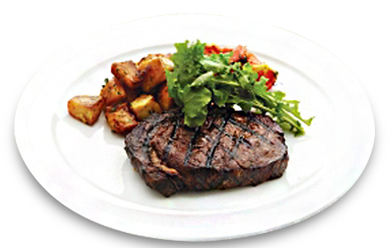
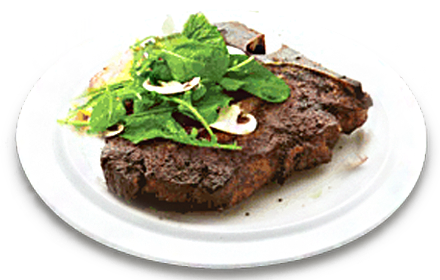

- 오늘 맛있는 고기 먹으러 갈까?꽃등심!
- 우리가 흔히 얘기하는 갈비심 부위로 꽃등심이라고도 합니다. 가운데 부분의 지방이 눈처럼 박혀있다 하여 립아이로 불리고 있답니다. 안심 등의 다른 부위보다 마블링을 비교적 많이 함유하고 있어 살짝 기름지고 고소한 맛은 최고라 할 수 있습니다.
립아이로 만들어진 빕스 스테이크
-
Ribeye Steak립아이 스테이크

- 씹는 맛이 살아있는 쫄깃쫄깃등심!
- 지방이 적고 결이 가늘어 담백하고 육질이 부드러운 등심은 소의 허리 끝부분에서 이루어지는 부위입니다. 스테이크 위쪽에 마블링이 있어 식감이 부드러우면서도 쫄깃쫄깃 합니다.
- 선술집용 고기를 주세요포터하우스!
- 소의 등쪽 허리 부분에서 이루어지는 부위로, 티(T)자형 뼈를 중심으로 안심과 등심이 좌우로 붙어있어 부드러운 안심의 맛과 쫄깃한 등심의 식감을 동시에 느낄 수 있습니다. 포터하우스라는 명칭은 선술집(Porter house)에서 유래되었습니다. 1800년대 초 맨하탄 남쪽 항구에 있는 선술집에서 선원을 위해 조리해준 스테이크 맛이 너무 좋아 그 이후에 정육점에서 고기를 살 때 "Cut steak for the Porter House"(선술집용 고기를 주세요)라고 했는데, 그 말이 시간이 지나면서 명사화 되었습니다.
포터하우스로 만들어진 빕스 스테이크
-
The VIPS Porterhouse포터하우스 스테이크

- 미식가 '샤또 브리앙'이 사랑한 스테이크안심!
- 소의 등쪽 안쪽에서 허리 부분까지 이루어지는 팔뚝만한 가느다란 부위인 안심은 지방이 거의 없고 부드러우며 담백한 식감을 느낄 수 있습니다. 도축되는 양이 다른 부위에 비해 적어서 고급스러운 요리에 많이 사용됩니다.안심홀육 덩어리는 다른 부위에 다르게 각각의 명칭이 있는데 가장 가운데 부분이 가장 고급스럽고 맛있는 부위로 알려져 있습니다. 19세기 프랑스 귀족이며 미식가인 샤또 브리앙 남작이 자신의 요리사인 몽미레이유에게 안심요리를 주문해 즐겨 먹었는데 다른 안심 부위는 먹지 않고 가운데 부분만을 즐겨 먹은것이 유래가 되어 그 부분을 샤또 브리앙이라 불리게 되었다고 합니다.
안심으로 만들어진 빕스 스테이크
-
Tenderloin Steak On Stone Grill얌 스톤 안심 스테이크